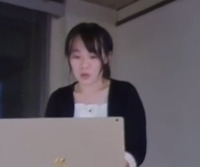

今回のテーマ
「誰でもできるAI」
「理系でなくてもできるAI」
「コピペでできるAI」
原点に返って、今すぐ誰でもできるAIを一通り紹介しようかなと考えています
目次
- [6:30 - 7:00]（前座）時事ネタ〜最近のつぶやきから〜
- [7:00 - 8:00] ZENKEI AI FORUM のめざすもの、めざさないもの
- 毎度おなじみのミッションですね（くどい）
- めざすものは、AI（技術、科学）の民主化
- めざさないものは、AI（技術、科学）のフリーライダー
- [8:00 - 9:00] これまでの ZENKEI AI FORUM
- 第１期 ZENKEI AI セミナー
2018年7月15日、有料セミナー形式でスタート - 第２期 ZENKEI AI FORUM
（リアル・ミーティングからライブ配信へ）
2019年4月17日から自由参加のフォーラム形式のイベントに移行 - 第３期 ZENKEI AI FORUM (ZOOM LIVE)
ちょうど３年目の2020年4月22日から ZOOM LIVE によるイベントに移行
- 第１期 ZENKEI AI セミナー
ZENKEI AI FORUM のめざすもの、めざさないもの
- 毎度おなじみのミッションですね（くどい）
- 瀧本哲史さんに従って、仲間を集めたい時は、ビジョンを語る、ということです
- まず最初に
- ZENKEI AI FORUM は、放課後である
- 「みんなにいい顔はできない」ということですね
- 村上春樹『走ることについて語る時に僕の語ること』 p.59
- その後、オチというか、文章は続いて
(店に来た)その十人に一人が「なかなか良い店だな。気に入った。また来よう」 と思ってくれればそれでいい。
- 久米宏も
ボクは100人の視聴者がいたら、そのうちの10人が賛同してくれたら大満足
- めざさないものは、AI（技術、科学）のフリーライダー
- 情報の非対称性を利用する人としての
- 商社的な人
- 人と人を繋ぐ（だけの）人
- コンサル、アドバイザー、etc.
- （レコード会社の社員、出版社の社員、 etc.）
- 情報の非対称性を利用する人としての
- めざすものは、AI（技術、科学）の民主化
- ぼくの恩師の一人の言葉
1974 年に東北大に来て間もない頃教授会で大学改革の議論がありました。
私は「どの層が開放されてパワーとなるのか?
明治維新は下級武士と大地主の息子達が、
敗戦後の改革では男のすべてが解放され、
その時期に必要な情熱に溢れたパワーを得られた。
今、男だけではパワーが足りない」と発言して変人と思われた。
今大学改革が求められ声高に論じられているが、
それを担う新たな層をどこに求めるか。
それ無しには一時の改善に留まる。 - 「これまでプログラムを書いたことがない」人にも
プログラミングを、コンピュータを、AI を使えるようになって欲しい- cf. Jeremy Howard は Coders に AI を伝えようとしていた
- 「プログラミング」とはなにか
- 答えは、文字通り、「言語の１つである」。
- これからの世の中は、 「プログラミングができる」ことは、「英語が喋れる」くらいの社会
- ２１世期の人々とは、もしかしたら、プログラミングができる人類
- プログラミングの「独学者」の、われわれは、もしかしたら最後の世代
- 想像：ジャズの音楽学校が整備される以前と以後のミュージシャン
- ぼくの恩師の一人の言葉
これまでの ZENKEI AI FORUM
第３期 ZENKEI AI FORUM (ZOOM LIVE)
ちょうど３年目の2020年4月22日から ZOOM LIVE によるイベントに移行
| 日付 | 内容１ | 内容２ | 内容３ |
|---|---|---|---|
2020/9/30
|
古川
『TechBook & AI』
| いちき 技術書典９出典記
|
|
2020/8/26
|
（前座）Mission Statement
|
古川
『はれときどきNLP』
|
ホンダナオ『東海道５Ｘ』
|
2020/7/29
|
ユーチューバーになる
|
Mission Statement
|
最近の話題から、GPT-3 と StyleGAN2
|
2020/6/24
|
音遊び
|
Mission Statement ぼくたちに友だちはいるのか 
|
GAN で東海道五十四次
|
2020/5/27
|
（ゲスト）太田正則さん 『文系おじさんのAIスクール6ヶ月ドタバタ日記』 
|
（音ネタ）エーアーウー・リムーバー・プロジェクト
|
（画像ネタ）東海道五十四次プロジェクト
|
2020/4/22
|
（座談会） ポストコロナ時代のAIに期待すること 
|
||
第２期 ZENKEI AI FORUM （リアル・ミーティングからライブ配信へ）
2019年4月17日から自由参加のフォーラム形式のイベントに移行
| 日付 | 内容１ | 内容２ | 内容３ | |
|---|---|---|---|---|
| 2020/3/25 | （前座）メトロポリタン浮世絵データセット くずし字ノートブック 
|
（ゲスト）あらんさん 『人工知能の歴史・3次ブームを超えて…(なんちて)』 
|
DeepMindの映画「AlphaGo」 Kaggle 敗戦記、など |
|
2020/2/28
|
協調フィルタリング | The Met から高解像度浮世絵画像データセット くずし字解読デモ CODH の「顔コレ」データセット |
五郎島プロジェクトの近況報告 （もっと）最近の話題から 最新の zenkei_ai の使い方 |
|
| ここまでが、会場からの YouTube LIVE 配信 これ以前は通常開催 |
||||
2020/1/31
|
２０２０年版、最近の話題から
|
（ゲスト）八島直道 氏 レコメンドエンジン開発 1週間チャレンジ 
|
||
| 2019/12/24 | クリスマス・パーティ | |||
2019/11/27
|
（ゲスト）株式会社シーピーユー AIラボ分科会 『CPU AIラボ分科会で学ぶものとは』 
|
（ゲスト）大島圭祐 氏 『TOEIC500点台の僕が1日10本以上英語論文を読めるようなるまで』 
|
古川郁衣『ゼロからはじめるAI』 第５回 自然言語処理 
|
|
2019/10/23
|
Nguyen Ngoc Giang 『くずし字コンペ参戦記』 
|
（ゲスト）長東大樹 氏 『硬質薄膜の密着力評価における AI適用事例の紹介』 
|
古川郁衣『ゼロからはじめるAI』 第４回 機械学習 
|
|
2019/9/25
|
いちき 『最近の話題から』 
|
（ゲスト）越野亮 氏 『学生の研究紹介と話題提供』 
|
古川郁衣『ゼロからはじめるAI』 第３回 Kaggleやってみた 
|
|
2019/8/28
|
（ゲスト）加藤真透 氏 『俺と Google Cloud Next Tokyo 2019 AI系参加レポート』 
|
Nguyen Ngoc Giang 『チンパンジーの姿勢推定：教師データがないときの工夫』 
|
古川郁衣『ゼロからはじめるAI』 第２回 画像生成 (GAN) 
|
|
2019/7/24
|
（ゲスト）加藤真透 氏 『俺と最近のクラウドAI系サービス』 
|
（ゲスト）大島圭祐 氏 『AI開発に必要なもの』 
|
（ゲスト）長谷川達人 氏 『深層学習の研究事例』 
|
古川郁衣『ゼロからはじめるAI』 第１回 犬猫分類とその活用 
|
2019/6/26
|
いちき
|
（ゲスト）ホンダナオ 氏 『アートとAI』 
|
（ゲスト）古賀 大介 氏、遠田 幹雄 氏 『中小企業診断士 AI研究会発足にあたり』 
|
|
2019/4/17
|
（ゲスト）遠田幹雄 氏、河二利勝 氏、塚本拓生 氏 『五郎島金時プロジェクト』 


|
（ゲスト）米田稔 氏 『医療分野で大学との共同研究にAI活用事例』 
|
（ゲスト）山本洋 氏 『江戸時代の出版物を対象としたくずし字解読プロジェクト』 
|
|
第１期 ZENKEI AI セミナー
2018年7月15日、有料セミナー形式でスタート
| 日付 | 内容 |
|---|---|
| 2018/12/5 | ディープラーニングの応用とまとめ 参加者のみなさんとこれまでの講義を振り返り、各自結果報告を行いました。 |
| 2018/11/7 | ディープラーニングによる自然言語処理 自然言語処理（NLP）を使い、金沢経済新聞の記事からタイトル生成にトライしました。 |
| 2018/10/3 | ディープラーニングによる超解像 マルチラベルの画像分類と超解像（解像度を上げる）を実施しました。 |
| 2018/9/5 | 全天周パノラマ画像の分類 パノラマ画像を使った分類を行いました。 |
| 2018/8/1 | はじめてのディープラーニング（画像分類） 犬と猫の画像を使って、犬猫分類と犬種分類を行いました。 |
| 2018/7/15 | プロローグ イントロダクション。当セミナーの目的と意義。 |
内容別のまとめ
『最近の話題から』シリーズ

『ゼロからはじめるAI』シリーズ
| 第１回(2019/7/24) | 犬猫分類とその活用

|
| 第２回(2019/8/28) | 画像生成 (GAN)
|
| 第３回(2019/9/25) | Kaggleやってみた
|
| 第４回(2019/10/23) | 機械学習
|
| 第５回(2019/11/27) | 自然言語処理  |
| 2020/8/26 | 『はれときどきNLP』
|
| 技術書典９ | 古川郁衣 著 『ゼロからはじめるAI』 
|
| 2020/9/30 | 『TechBook & AI』
|
ゲスト
- Nguyen Ngoc Giangさん
- 2019/10/23
『くずし字コンペ参戦記』

- 2019/8/28
『チンパンジーの姿勢推定：教師データがないときの工夫』

- 2019/10/23
『くずし字コンペ参戦記』
- ホンダナオさん
- 大島圭祐さん
- 2019/11/27
『TOEIC500点台の僕が1日10本以上英語論文を読めるようなるまで』
- 2019/7/24
『AI開発に必要なもの』

- 2019/11/27
『TOEIC500点台の僕が1日10本以上英語論文を読めるようなるまで』
- 加藤真透さん
- あらんさん
2020/3/25 『人工知能の歴史・3次ブームを超えて…(なんちて)』 - 長東大樹さん
2019/10/23 『硬質薄膜の密着力評価における AI適用事例の紹介』

- 太田正則さん
2020/5/27 『文系おじさんのAIスクール6ヶ月ドタバタ日記』 - 八島直道さん
2020/1/31 『レコメンドエンジン開発 1週間チャレンジ』 - 株式会社シーピーユー AIラボ分科会
2019/11/27 『CPU AIラボ分科会で学ぶものとは』
- KAIs（古賀大介さん、遠田幹雄さん）
『中小企業診断士 AI研究会発足にあたり』

- 『五郎島金時プロジェクト』
遠田幹雄さん、河二利勝さん、塚本拓生さん


- 米田稔さん
『医療分野で大学との共同研究にAI活用事例』

- 山本洋さん
『江戸時代の出版物を対象としたくずし字解読プロジェクト』

- 長谷川達人さん
 2019/7/24
『深層学習の研究事例』
2019/7/24
『深層学習の研究事例』
- 越野亮さん

2019/9/25 『学生の研究紹介と話題提供』


{kind=link}
{kind=link}
{kind=link}
{kind=link}
{kind=link}
{kind=link}
{kind=link}
{kind=link}
{kind=link}
{kind=link}
{kind=link}
{kind=link}
{kind=link}